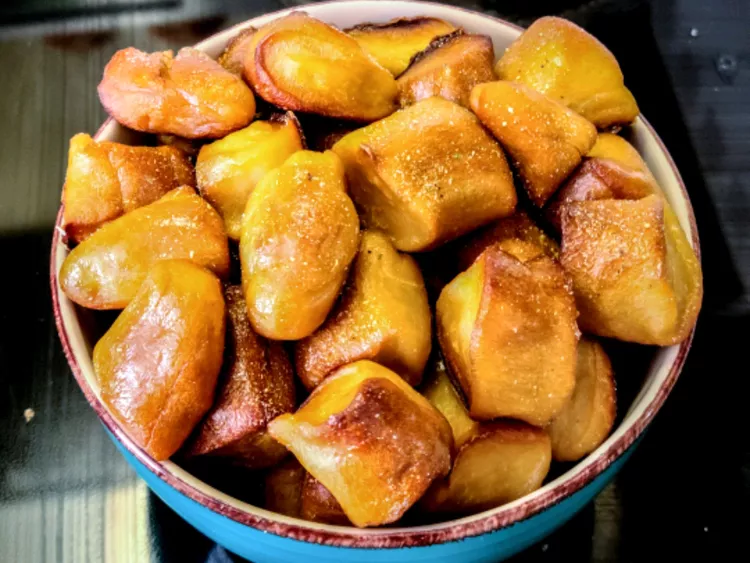

Soft Pretzel Bites

Description
This is yet another recipe from allrecipes.com. This time it's for some nice pretzel bites!
This pretzel bite recipe takes around 2 hours total to make (according to the website) and makes about 16 servings.
Ingredients
- 1 1/2 cups of water
- 6 tablespoons of butter, melted
- 2 tablespoons of brown sugar
- 1 (.25 oz) package of active dry yeast
- 2 1/2 teaspoons of kosher salt
- 4 of cups all-purpose flour, or more as needed
- 1 teaspoon of vegetable oil
- 3 quarts of cold water
- 1/2 cup of baking soda
- Cooking Spray
- 1 egg
- 1 tablespoon of water
Steps to Make it
- Place 1 1/2 cups water, butter, brown sugar, yeast, and salt in the bowl of a stand mixer fitted with the hook attachment. Mix until well combined. Let sit for about 5 minutes.
- Turn mixer on low speed and add 4 cups flour, 1 cup at a time. Add additional 1/2 cup flour if dough appears sticky. Increase speed to medium and knead until dough is smooth and pulls away from the sides of the bowl, 4 to 5 minutes. Sprinkle in more flour if dough still seems a little tacky.
- Oil a large mixing bowl. Add the ball of dough. Cover with plastic wrap and let rise in a warm place for about 1 hour.
- Preheat the oven to 425 degrees F (220 degrees C). Grease a sheet pan with cooking spray.
- Bring 3 quarts water to a boil in a large saucepan. Slowly add baking soda and return to a boil.
- Meanwhile, remove dough from the bowl, flatten into a disc shape, and cut into 8 wedges. Roll each wedge into a 24-inch rope. Cut each rope into 1-inch pieces.
- Drop batches of dough pieces into the boiling water for about 35 seconds. Remove to the prepared sheet pan. Beat egg with 1 tablespoon water; brush over the tops of each boiled dough piece. Repeat with remaining dough.
- Bake in the preheated oven until golden brown, 14 to 16 minutes. Cool slightly before serving.